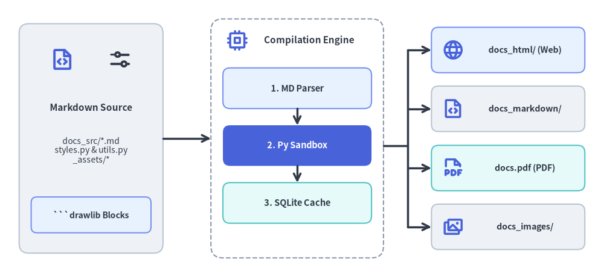
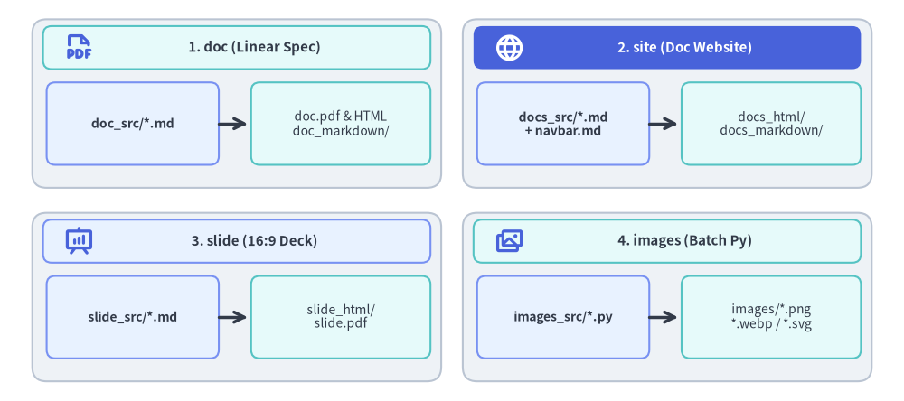

Illustrated Documentation as Code: The Drawlib Build Engine
Drawlib unifies technical documentation and architectural illustrations under a single "Illustrated Documentation as Code" pipeline. Instead of managing out-of-sync vector files, manually exporting diagrams from third-party tools, or checking in opaque binary assets, you author declarative Python drawing blocks directly inside standard Markdown documents.

Source Code
from drawlib.canvas import save, setup
from drawlib.icons import phosphor
from drawlib.lines import line
from drawlib.shapes import rectangle
from drawlib.styles import Styles
from drawlib.text import text
setup(width=126, height=58)
# Left: Markdown Source
rectangle((19, 29), width=30, height=48, style=Styles.Neutral.patch(shape_r=2.0))
phosphor.file_code((13, 45.5), width=5.2, style=Styles.PrimaryBold)
phosphor.sliders_horizontal((25, 45.5), width=5.2, style=Styles.DarkBold)
text((19, 35.5), "Markdown Source", style=Styles.DarkBold.patch(text_size=11.0))
text((19, 26.5), "docs_src/*.md\nstyles.py & utils.py\n_assets/*", style=Styles.Dark.patch(text_size=10.0))
rectangle(
(19, 13.0),
width=25,
height=7.5,
style=Styles.PrimaryNeutral.patch(shape_r=1.2),
text="```drawlib Blocks",
text_style=Styles.DarkBold.patch(text_size=10.0),
)
# Center: Drawlib Compilation Pipeline Container
rectangle((62, 29), width=36, height=50, style=Styles.MutedDashed.patch(shape_r=2.5))
phosphor.cpu((49.5, 49.5), width=4.6, style=Styles.PrimaryBold)
text((64.5, 49.5), "Compilation Engine", style=Styles.DarkBold.patch(text_size=11.0))
rectangle(
(62, 39.5),
width=31,
height=8.5,
style=Styles.PrimaryNeutral.patch(shape_r=1.5),
text="1. MD Parser",
text_style=Styles.DarkBold.patch(text_size=10.5),
)
line((62, 35.25), (62, 31.75), arrow_head="->", style=Styles.DarkBold)
rectangle(
(62, 27.5),
width=31,
height=8.5,
style=Styles.PrimaryFlat.patch(shape_r=1.5),
text="2. Py Sandbox",
text_style=Styles.WhiteBold.patch(text_size=10.5),
)
line((62, 23.25), (62, 19.75), arrow_head="->", style=Styles.DarkBold)
rectangle(
(62, 15.5),
width=31,
height=8.5,
style=Styles.SecondaryNeutral.patch(shape_r=1.5),
text="3. SQLite Cache",
text_style=Styles.DarkBold.patch(text_size=10.5),
)
# Right: 4 Publishing Targets
targets = [
(47.5, "docs_html/ (Web)", Styles.PrimaryNeutral, phosphor.globe),
(35.2, "docs_markdown/", Styles.Neutral, phosphor.file_code),
(22.8, "docs.pdf (PDF)", Styles.SecondaryNeutral, phosphor.file_pdf),
(10.5, "docs_images/", Styles.Neutral, phosphor.images),
]
for ty, label, st, icon_fn in targets:
rectangle((106, ty), width=32, height=9.5, style=st.patch(shape_r=1.5))
icon_fn((94.5, ty), width=4.6, style=Styles.PrimaryBold)
text((109.5, ty), label, style=Styles.DarkBold.patch(text_size=10.2))
# Connectors: Source -> Pipeline -> 4 Publishing Targets
line((34, 29), (44, 29), arrow_head="->", style=Styles.DarkBold)
line((80, 27.5), (85, 27.5), style=Styles.DarkBold)
line((85, 10.5), (85, 47.5), style=Styles.DarkBold)
for ty, _, _, _ in targets:
line((85, ty), (90, ty), arrow_head="->", style=Styles.DarkBold)
save()
1. Core Principles
- Source of Truth (
<name>_src/): You author content exclusively in source directories (e.g.docs_src/,doc_src/,slide_src/, orimages_src/). Output folders (docs_html/,docs_markdown/,docs_images/,images/, etc.) are build artifacts and should never be manually modified. - Deterministic Build Cache: Drawlib computes a SHA-256 hash of each embedded code block (
styles.py,utils.py, and referenced local assets included). Unaltered diagrams are restored instantly from.drawlib/cache.db, enabling sub-second incremental builds across massive multi-page sites. - Execution Sandbox & Isolation: The canvas lifecycle automatically clears between separate code blocks, ensuring zero visual side effects between adjacent diagrams.
- Target Portability: The same Markdown source document can compile simultaneously to:
- A responsive static HTML documentation site (
drawlib build html). - GitHub-flavored Markdown with companion images (
drawlib build markdown). - A publication-grade vector PDF with table of contents and cover page (
drawlib build pdf). - Extracted standalone diagram images (
drawlib build image).
- A responsive static HTML documentation site (
2. Project Starter Templates
Never construct documentation directories manually. Scaffolding them with drawlib init guarantees the correct directory layout and configuration scripts:
| Template | Source Directory | Primary Output | Typical Use Case |
|---|---|---|---|
doc |
doc_src/ |
doc_html/, doc.pdf, doc_markdown/, doc_images/ |
Linear technical documents, RFCs, specifications, whitepapers, and formal reports. |
site |
docs_src/ |
docs_html/, docs_markdown/ (or docs/), docs_images/ |
Multi-page documentation websites with sidebar navigation (navbar.md). |
slide |
slide_src/ |
slide_html/, slide.pdf, slide_images/ |
16:9 presentation slide decks (interactive web deck + printable vector PDF). |
images (alias: image) |
images_src/ |
images/*.png (or .webp) |
Batch rendering standalone Python drawing scripts to image assets. |

Source Code
from drawlib.canvas import save, setup
from drawlib.icons import phosphor
from drawlib.lines import line
from drawlib.shapes import rectangle
from drawlib.styles import Styles
from drawlib.text import text
setup(width=126, height=56)
cards = [
(
33,
41.5,
"1. doc (Linear Spec)",
Styles.SecondaryNeutral,
Styles.DarkBold,
phosphor.file_pdf,
Styles.PrimaryBold,
"doc_src/*.md",
"doc.pdf & HTML\ndoc_markdown/",
),
(
93,
41.5,
"2. site (Doc Website)",
Styles.PrimaryFlat,
Styles.WhiteBold,
phosphor.globe,
Styles.WhiteBold,
"docs_src/*.md\n+ navbar.md",
"docs_html/\ndocs_markdown/",
),
(
33,
14.5,
"3. slide (16:9 Deck)",
Styles.PrimaryNeutral,
Styles.DarkBold,
phosphor.presentation_chart,
Styles.PrimaryBold,
"slide_src/*.md",
"slide_html/\nslide.pdf",
),
(
93,
14.5,
"4. images (Batch Py)",
Styles.SecondaryNeutral,
Styles.DarkBold,
phosphor.images,
Styles.PrimaryBold,
"images_src/*.py",
"images/*.png\n*.webp / *.svg",
),
]
for cx, cy, title, hdr_style, hdr_text_style, icon_fn, icon_st, src_text, out_text in cards:
rectangle((cx, cy), width=57, height=23.5, style=Styles.Neutral.patch(shape_r=2.0))
rectangle((cx, cy + 7.8), width=54, height=6.0, style=hdr_style.patch(shape_r=1.2))
icon_fn((cx - 22.0, cy + 7.8), width=4.2, style=icon_st)
text((cx + 2.5, cy + 7.8), title, style=hdr_text_style.patch(text_size=10.8))
rectangle(
(cx - 14.5, cy - 2.8),
width=24,
height=11.5,
style=Styles.PrimaryNeutral.patch(shape_r=1.2),
text=src_text,
text_style=Styles.DarkBold.patch(text_size=10.0),
)
line((cx - 2.5, cy - 2.8), (cx + 1.5, cy - 2.8), arrow_head="->", style=Styles.DarkBold)
rectangle(
(cx + 14.5, cy - 2.8),
width=25,
height=11.5,
style=Styles.SecondaryNeutral.patch(shape_r=1.2),
text=out_text,
text_style=Styles.Dark.patch(text_size=10.0),
)
save()
3. Chapter Structure
Dive deeper into each builder subsystem:
- Embedded Code Blocks: Code fence syntax, display modes (
show-code,fold-code), alignment, and captions. - CLI Reference: Complete guide to
build,serve,show,init,cache,css,colors,styles, andrules. - Linear Document Project Guide: Linear document RFCs, specifications, whitepapers, and dual HTML/PDF publishing.
- Doc Site Project Guide: Multi-page website authoring, sidebar categories, and link validation.
- Slide Deck Project Guide: 16:9 presentation slide decks with interactive web deck and vector PDF export.
- Slide Stage Layout & API:
1920x1080virtual stage coordinates,::: block/::: notesyntax, templates, anddrawlib.slidePython API. - Image Project Guide: Standalone script automation (
images_src/➔images/). - Customization & Theming: Customizing
template.html,style.css, and injecting projectstyles.pyandutils.py. - Caching Architecture & CI/CD: Two-tier caching (
.drawlib/cache.db&drawlib cache) and headless CI/CD pipelines.